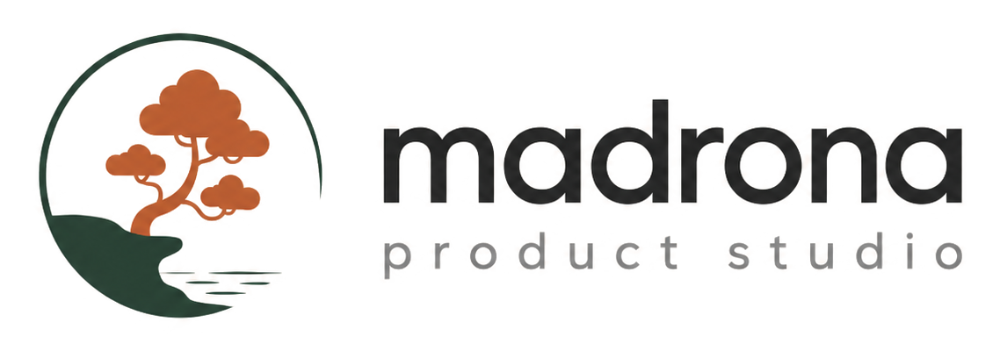

og-thinking.png — /thinking index
Thinking
How great software gets
built.
Learnings, artifacts, and guides from inside Madrona.

madronaproduct.com/thinking
og-pov-under-the-hood.png
Thinking · Artifact
The engine behind
everything we ship
The platform every project inherits, and how to set up your own.
madronaproduct.com/thinking
og-pov-agentic-operations.png
Thinking · Essay
The era of agentic
operations
AI agents on a rhythm, one source of truth, a person in charge.
madronaproduct.com/thinking
og-pov-starter-guide.png
Thinking · Guide
A starter guide to
building real software
with AI
Install the tools, six prompts that work, and your first real build.
madronaproduct.com/thinking
og-pov-thesis.png — /thesis
Thinking · Essay
The Madrona
Product Thesis
AI expands what Product, Design, and Engineering each contribute.
madronaproduct.com/thesis